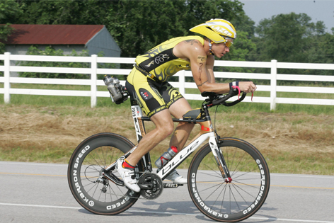
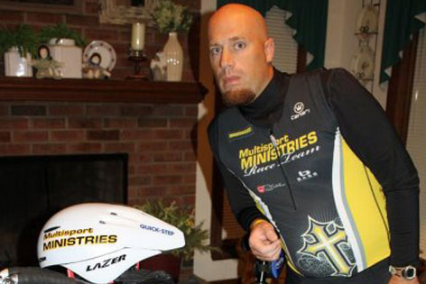
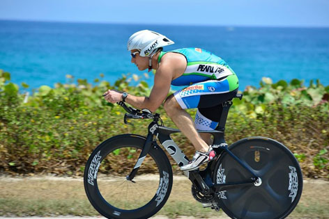

Coach Trevor
Coach Trevor can be reached by phone at 407-341-2965 or through email at coach@kingdommultisport.com.
I know what it is to be the Triathlon Age-Grouper and balance life with triathlon training. I’m a husband, father of 3, work full time as an Operations Manager, a student, and am involved with Multisport Ministries Triathlon team. My passion is Triathlon; constantly pushing myself to improve while passionately working hard to achieve greatness with the athletes I coach.
I wasn’t always healthy. I used to be 100 lbs overweight and started running in combination with proper diet as a means to get fit. Once I got to my ideal weight I began to compete in sprint distance triathlons and marathon/half marathon races ultimately working my way to completing the Ironman. I know what it takes to lose the weight and to train and prepare for your big race and welcome discussing what your fitness and lifestyle goals are.
Athletic Highlights:
- 8 X Ironman Finisher:
- Florida 2010
- Louisville 2011
- Great Floridian Triathlon Full Distance 2011 & 2012
- Lake Placid 2012
- Bone Island Triathlon 2013
- HITS Ocala 2013 - 10th Overall, 1st Age Group
- Ironman Texas 2013
- 8 X Ironman 70.3 Finisher:
- 2 X Qualifier for USAT Age Group National Championships 2010 & 2011
Coaching Credentials:
- USAT Level I Coach
- ITCA (International Triathlon Coaching Association) Coach
Sponsorships:
- BASE Performance
- Infinit Nutrition
- Karbon Speed Wheels
- Breakthrough Nutrition
- Quarq Power Meters
Coach Joe
Coach Joe can be reached at 252-290-1305 or strangejoe@gmail.com.
I got into the sport of triathlon about 12 years ago with the goal of completing an Ironman Distance triathlon. Here I am, 12 years later and I have completed four full distance Ironman’s along with many other sprint to half distance events. Over the past few years I have been coaching and helping others meet goals they have within the sport. My wife and 2 kids (both girls, 9 and 11) are also involved in the sport of triathlon and have competed in events at various distances.
Triathlon has become a lifestyle that I live. I love sharing the knowledge that I have learned over the past 12 years and helping others reach their goals whether it is finishing their first sprint to completing an Iron-distance event. I currently serve as a full-time student pastor in Wilson, NC. I am also the chaplain for the NC-chapter of Multisport Ministries and race with the team throughout the year at various events.
Athletic Highlights:
- 4 X Ironman Finisher:
- Florida 2005
- Louisville 2007
- Beach to Battleship Ultra Distance 2009 & 2011
- 3X Ironman 70.3 finisher
Coaching Credentials:
- USAT Level I Certified triathlon coach
Coach Dave
Coach Dave can be reached at coachdave@kingdommultisport.com.
It was the middle of 2005 and as usual I was sitting on my couch. I was lethargic all the time, and just looked forward to the next nap I could take. Frustrated with my general condition, I decided to sign-up for a triathlon as a way of getting into shape. Woefully unprepared and in way over my head, I completed that first sprint triathlon in Clemson, SC near the back of the pack in the "Novice" category. I was, however, amazingly proud and completely hooked on the sport of triathlon!
Since that day in South Carolina, the Lord has blessed me with some amazing experiences. In addition to some great venues ad events, more than anything, the people that He has put in my path to help me along the way has led to lasting friendships and personal relationships that I cherish. From shop-owners to vendors, athletes to spectators, the camaraderie in this sporting community is truly life changing.
I believe that training and racing as a part of an active lifestyle adds benefit to every aspect of life. Personally, I am a full time senior technologist for a very large financial institution. Having a full time job myself, I understand the need to balance God, family, work, and other activities in life. It is this sense of balance that I want to bring to the athletes I coach. For the age-grouper - this is a hobby. We do not make money doing this, and, we want to enjoy every minute. Helping my athletes get prepared for raceday, while working in the time needed to effectively train, is a task that I look forward to everyday.
I have been blessed to work with some of the best coaches in the world: from Olympic coaches, to USAT National U23 coaches, to nutritionists who plan for some of the top pros. I want to take the experience I have gained during my time in this sport and share them with our athletes as they reach for goals they never dreamed possible!
Athletic Highlights:
- 4 X Ironman Finisher:
- Austria 2008
- Coeur D' Alene 2010
- Louisville 2011
- US Championships, NY 2012
- Multiple Ironman 70.3 Finisher including:
- Timberman
- Eagleman
- Cancun
- Miami-Man
- Augusta
- Muncie
- ITU Long Course World Championships 2007
- Ironman 5150 Series Championship Qualifier 2011
- USAT Age Group Nationals Qualifier 2011
Coaching Credentials
- USAT Level I Coach
Sponsorships
- Team Rev3 Triathlon Team
- ISM Saddles
- K-Swiss K-Fast Program
- GU Brand Ambassador
- Blue Seventy Ambassador
- Hawk Racing Ambassador